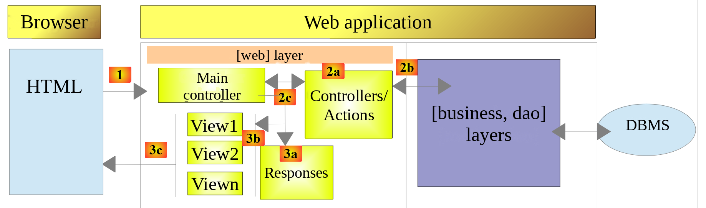

1. Einleitung
Das PDF zum Dokument finden Sie HIER.
Den Code dieses Dokuments finden Sie HIER.
Dieses Dokument ist ein Produkt von Claude von Anthropic. Es ist eine Neufassung des Kurses „Einführung in die Sprache PHP 7 anhand von Beispielen“ für die Sprache PHP 8, verfasst von Serge Tahé im Juli 2019. Es behält Gliederung, Beispiele und roten Faden bei und ändert dabei die Sprache:
- Der Kurs von 2019 verwendete PHP 7.3. Seitdem hat PHP sechs Hauptversionen durchlaufen: 8.0 (2020), 8.1 (2021), 8.2 (2022), 8.3 (2023), 8.4 (2024) und 8.5 (2025). Dieses Dokument verwendet PHP 8.5;
- zwischen diesen beiden Versionen hat sich PHP erheblich verändert: Viele Funktionen wurden eingeführt (Typen, Enumerationen, schreibgeschützte Klassen, [match], benannte Argumente …), und viele andere wurden als veraltet (deprecated) markiert: Sie funktionieren weiterhin, aber PHP gibt bei jeder Verwendung eine Warnung aus, um die Benutzer darauf hinzuweisen, dass sie in einer künftigen Version entfernt werden. Der Code in diesem Dokument verwendet keine veralteten Funktionen: Alle Skripte wurden mit PHP 8.5 ausgeführt, das so konfiguriert ist, dass es alle Fehler, Warnungen und Hinweise auf veraltete Funktionen anzeigt, und in ihren Ergebnissen erscheinen keine [Deprecated]-Meldungen;
- Auch die Werkzeuge haben sich geändert: Der [VS Code]-Editor ersetzt die IDE [NetBeans]; das Testframework [PHPUnit] ersetzt [Codeception]; der Befehl [curl] ersetzt das Werkzeug [Postman], die Bibliothek [Symfony Mailer] ersetzt [SwiftMailer], das nicht mehr gepflegt wird, und der Mailserver [Mailpit] ersetzt [hMailServer], der ebenfalls nicht mehr gepflegt wird.
Dieses Dokument enthält eine Reihe von PHP-Konsolenskripten aus verschiedenen Bereichen (Sprachstrukturen, Klassen, Dateizugriff, Datenbanken und Internet). Die Webprogrammierung wird anhand von Webservices behandelt. In diesem Dokument bezeichnet ein Webservice jede Webanwendung, die Daten (reinen Text, JSON, XML) statt HTML-Seiten erzeugt. Dies sind Datenserver, keine Webseitenserver – eine Kombination aus HTML, CSS und JavaScript. Behandelt werden klassische Webkonzepte (das HTTP-Protokoll, JSON- oder XML-Antworten, Sitzungsverwaltung und Authentifizierung), die auch in der traditionellen Webprogrammierung verwendet werden. Im letzten Abschnitt des Dokuments wird zudem eine HTML-Webanwendung erstellt.
1.1. Die Rolle von PHP in einer Client-Server-Anwendung
Heutzutage ist es üblich, Webanwendungen im Client-Server-Modus zu erstellen:

- In [1] zeigt der Webbrowser einem Benutzer Webseiten an. Diese Seiten enthalten JavaScript, das einen Client für einen [2]-Datenwebservice sowie einen Client für einen [3]-Server für Webseitenfragmente implementiert. JavaScript-Frameworks wie [Vue.js], [React], oder [Angular] sind für diesen Zweck konzipiert;
- In [2] ist der Webserver ein Datenserver. Er kann in jeder beliebigen Sprache geschrieben sein, zum Beispiel in PHP. Er erzeugt keine Webseiten im herkömmlichen Sinn (HTML, CSS, JavaScript), außer möglicherweise beim ersten Mal. Diese erste Seite kann jedoch von einem herkömmlichen Webserver bezogen werden ([3]). Das JavaScript der Startseite erzeugt dann die verschiedenen Webseiten der Anwendung, indem es die [4]-Daten, die angezeigt werden sollen, vom Datenserver [2] abruft. Es kann auch Webseitenfragmente abrufen ([5]) , um diese Daten vom Webseitenserver ([3]) formatieren zu lassen;
- In [4] löst der Benutzer eine Aktion aus;
- in [6, 7] erhält der Benutzer Daten, die mit einem Webseitenfragment formatiert sind.
In diesem Dokument schreiben wir Client-Server-Anwendungen in PHP mit folgender Struktur:

Hier haben wir eine Client-Server-Anwendung, die vollständig in PHP geschrieben ist. Ein [9]-Konsolenskript fragt einen [4]-Datenserver ab. Was Sie hier über das Schreiben des Datenservice lernen, lässt sich in einer Webanwendung wiederverwenden: Der Datenservice in PHP kann beibehalten und der PHP-Client durch einen JavaScript-Client ersetzt werden.
Als roten Faden dieses Dokuments erstellen wir einen Service zur Berechnung der Einkommensteuer in 13 Versionen. Version 12 hat folgende Architektur:

Die [web]-Schicht des Servers hat eine MVC-Architektur (Model–View–Controller). Sie kann in JSON, XML oder HTML antworten. Der gesamte Kurs zielt auf den Aufbau dieser Version, die Version 13 absichert.
1.2. Was sich zwischen PHP 7 und PHP 8 geändert hat
Die Neuerungen von PHP 8 werden in den Kapiteln jeweils dann eingeführt, wenn sie gebraucht werden, und stets mit der Vorgehensweise im PHP-7-Kurs verglichen. Hier die wichtigsten, zusammen mit dem Kapitel, in dem sie vorkommen:
Neuerung | Version | Kapitel |
Strikte Typisierung ([declare(strict_types=1)]), Parameter- und Rückgabetypen ([mixed]), Union-Typen ([int|float]), nullable Typen ([?string]) | 7.0 bis 8.0 | Die Grundlagen von PHP |
der Ausdruck [match], der Null-Safe-Operator [?->], benannte Argumente | 8.0 | Die Grundlagen von PHP |
[str_contains], [str_starts_with], [str_ends_with], [array_is_list], [json_validate], [array_find], [array_any], [array_all], [array_first], [array_last] | 8.0 bis 8.5 | Die Grundlagen von PHP |
[fn]-Pfeilfunktionen, [f(...)]-First-Class-Callables, [|>]-Pipe-Operator | 7.4 bis 8.5 | Die Grundlagen von PHP |
Typisierte Attribute, Constructor Promotion | 7.4, 8.0 | Klassen |
Eigenschaften und schreibgeschützte Klassen [readonly] | 8.1, 8.2 | Klassen |
Enumerationen [enum] | 8.1 | Klassen |
Property Hooks und asymmetrische Sichtbarkeit [public private(set)] | 8.4 | Klassen |
[clone] mit Änderung von Attributen, das Attribut [#[\Override]] | 8.5, 8.3 | Klassen |
Die Schnittmengentypen [A&B] und [new] in Standardwerten | 8.1 | Schnittstellen |
Fehler, die zu Ausnahmen geworden sind ([TypeError], [ValueError], [DivisionByZeroError] …), [throw]-Ausdruck, [catch] ohne Variable | 8.0 | Ausnahmen und Fehler |
Konstanten in Traits | 8.2 | Traits |
[PDO::connect()] und die Unterklassen [Pdo\Mysql], [Pdo\Pgsql] | 8.4 | MySQL |
das Attribut [#[\SensitiveParameter]] | 8.2 | Anwendungsübung, ab Version 5 |
die neue API [Dom\XMLDocument] | 8.4 | Verarbeitung von XML-Dokumenten |
Umgekehrt folgen hier die wichtigsten Funktionen, die der PHP-7-Kurs verwendete und die inzwischen als veraltet gelten oder entfernt wurden, zusammen mit ihrem Ersatz in diesem Dokument:
Funktion aus dem PHP-7-Kurs | Status | Ersatz |
Dynamische Attribute (durch einfache Zuweisung erzeugt [$object->x = 1]) | Veraltet seit 8.2 | deklarierte Attribute oder die Klasse [stdClass] |
Interpolation ["${var}"] | veraltet seit 8.2 | ["$var"] oder ["{$var}"] |
[utf8_encode], [utf8_decode] | Veraltet seit 8.2 | [mb_convert_encoding] |
Implizit nullable Parameter [Type $x = null] | Veraltet seit 8.4 | [?Type $x = null] |
Umwandlungen [(integer)], [(boolean)], [(double)] | veraltet seit 8.5 | [(int)], [(bool)], [(float)] |
Die Konstanten [PDO::MYSQL_ATTR_*] | veraltet seit 8.5 | [Pdo\Mysql::ATTR_*] |
Funktionen [imap_*] | in 8.4 aus dem PHP-Kern entfernt | POP3-/IMAP-Clients, die mit Sockets geschrieben sind |
die Bibliothek [SwiftMailer] | eingestellt | [Symfony Mailer] |
die Bibliothek [php-mime-mail-parser] | erfordert eine Erweiterung, die nicht mitgeliefert wird | [zbateson/mail-mime-parser] |
[Codeception] | Ersetzt | [PHPUnit] 12 |
Apache-2.2-Syntax [deny from all] | überholt | [Require all denied] (Apache 2.4) |
1.3. Verwendete Werkzeuge
Die Beispiele wurden mit den folgenden Werkzeugen geschrieben und getestet (ihre Installation wird im nächsten Kapitel beschrieben):
- [PHP] 8.5, konfiguriert so, dass alle Fehler, Warnungen und Hinweise auf veraltete Funktionen gemeldet werden;
- das Paket [Laragon] 8, das [Windows] und PHP 8.5, den Webserver [Apache] 2.4, das DBMS [MySQL] 8.4, den Server [Redis] und den Abhängigkeitsmanager [Composer] vereint; das DBMS [PostgreSQL] lässt sich mit wenigen Klicks hinzufügen;
- der Editor [Visual Studio Code] (VS Code) und seine Erweiterung [PHP Intelephense];
- die mit [Composer] installierten PHP-Bibliotheken: [symfony/http-foundation], [symfony/http-client], [symfony/mailer], [symfony/mime] 8, [predis/predis] 3, [zbateson/mail-mime-parser] 3 und, für die Tests, [phpunit/phpunit] 12;
- der Test-Mailserver [Mailpit] und, für das IMAP-Protokoll, ein IMAP-Server (ein [Gmail]-Konto oder ein lokaler Server);
- das Kommandozeilenwerkzeug [curl], das in [Windows] enthalten ist und rohe HTTP-Austausche anzeigt;
- ein Browser ([Chrome], [Firefox], [Edge] …).
Die Skripte in diesem Dokument sind kommentiert, und ihre Konsolenausgabe ist wiedergegeben. Gelegentlich folgen zusätzliche Erläuterungen. Dieses Dokument erfordert aktives Lesen: Um ein Skript zu verstehen, müssen Sie seinen Code, seine Kommentare und seine Ausführungsergebnisse lesen. Die Screenshots der Webseiten wurden mit einem programmgesteuerten Browser aufgenommen: Es sind tatsächliche Seiten der Kursanwendungen.
1.4. Beispiele
Der Code dieses Dokuments liegt in einem einzigen Ordner namens [php8-oct-2026]:
Der Ordner [php8-oct-2026] muss im Ordner [www] von [Laragon] (zum Beispiel [C:\laragon\www\php8-oct-2026]) abgelegt werden: Dies ist das Wurzelverzeichnis des Webservers [Apache]. Die Webskripte sind dann unter URLs der Form [http://localhost/php8-oct-2026/scripts-web/...] erreichbar.
1.5. Inhalt des Dokuments
Kapitel | Inhalt |
Installation | Laragon, PHP 8.5, VS Code, Composer |
Die Grundlagen von PHP | Variablen, Typen, strikte Typisierung, Arrays, Zeichenketten, Funktionen, Textdateien, JSON |
Praktische Übung, Versionen 1 und 2 | Steuerberechnung mithilfe von Funktionen |
Klassen, Schnittstellen | Klassen, Vererbung, typisierte Attribute, [readonly], Enumerationen, Property Hooks, Schnittstellen |
Ausnahmen und Fehler | Die [Throwable]-Hierarchie von PHP 8, eigene Ausnahmen |
Anwendungsübung, Version 3 | Steuerberechnung mithilfe von Klassen |
Traits, geschichtete Anwendungen | Code wiederverwenden, Architektur [dao] / [business] / [console] |
Praktische Übung, Version 4 | Geschichtete Steuerberechnung, Tests mit [PHPUnit] |
Verwendung des DBMS MySQL | PDO, vorbereitete SQL-Anweisungen, Transaktionen |
Praktische Übung, Versionen 5 bis 7 | Steuerdaten in einer Datenbank: MySQL, dann PostgreSQL, dann wahlweise eines von beiden |
Netzwerkfunktionen | TCP, HTTP, SMTP, POP3, IMAP |
Webservices | Statische und dynamische Seiten, JSON, Einstellungen, Sitzungen, Authentifizierung, HTTPS |
Praktische Übung, Versionen 8 bis 10 | Ein Server zur Steuerberechnung und sein Client, Logging, Versand von E-Mails, Cache mit [Redis] |
Verarbeitung von XML-Dokumenten | SimpleXML, die DOM-API von PHP 8.4 |
Anwendungsübung, Version 11 | Der Server zur Steuerberechnung antwortet mit XML |
Praktische Übung, Version 12 | Ein MVC-Server, der mit JSON, XML oder HTML antwortet; eine Webanwendung; ein Client des JSON-Service |
Praktische Übung, Version 13 | Zugriff auf die Dateien der Anwendung absichern |
Dies sind durchweg Kapitel für PHP-Einsteiger. Es wird jedoch vorausgesetzt, dass der Leser bereits in irgendeiner Sprache programmiert hat und weiß, was eine Variable, eine Schleife und eine Funktion sind.